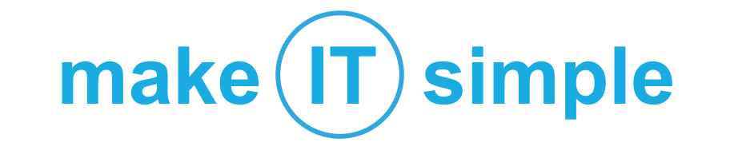
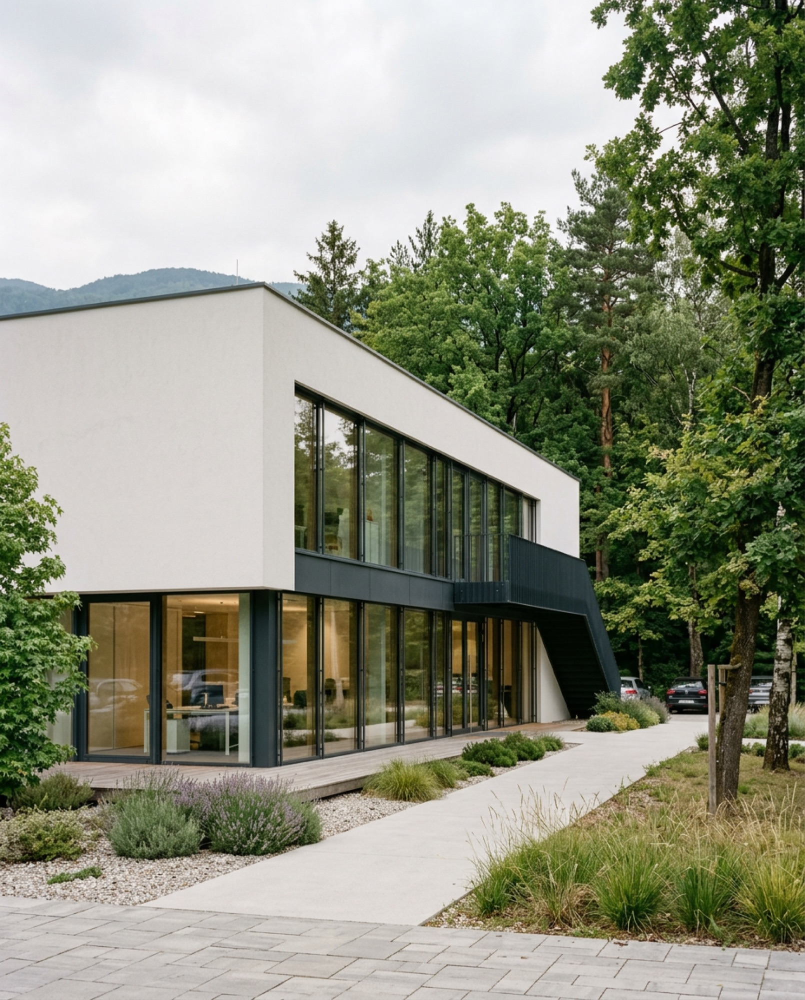
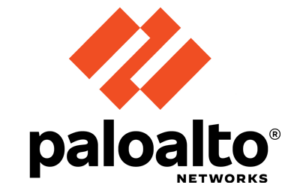
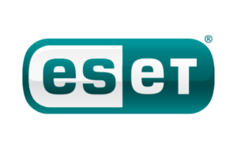
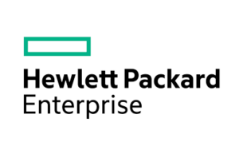
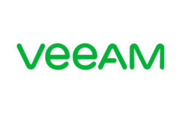
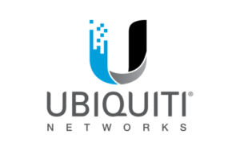
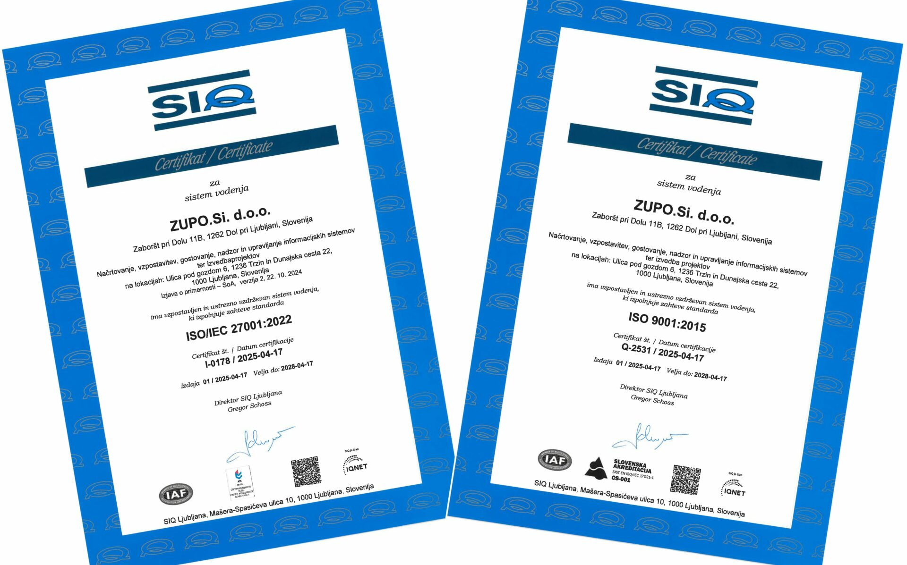

Vaš skrbnik zastrežniško infrastrukturo,upravljanje komunikacijin varnost na internetu.
Ekipa 20 strokovnjakov s preko 25 let izkušenj. Upravljamo, vzdržujemo in varujemo vaše informacijsko okolje, da je vaša edina skrb vaš posel.

Podjetje ZupO.si je danes ekipa 20 strokovnjakov s preko 25 let izkušenj na področju zunanjega izvajanja informacijskih storitev. Upravljamo strežnike, komunikacije in uporabniško opremo, skrbimo za lasten podatkovni center in za varnost vaših podatkov.

Vse za delujoče
IT okolje.
Specializirani smo za upravljanje infrastrukture, načrtovanje sistemov in podporo uporabnikom, ki je dosegljiva vse dni v letu.
Upravljanje infrastrukture
Strežniki, komunikacije in uporabniška oprema pod stalnim nadzorom.
Načrtovanje IKT sistemov
Načrtovanje in optimizacija novih sistemov ter prenove obstoječih.
Podpora uporabnikom 24/7
Odzivna podpora, dosegljiva 24/7, vse dni v letu.
Podatkovni center
Naš oblak. Lasten podatkovni center od leta 2012.
Gostovanje
E-pošta, domene in DNS, spletne strani, strežniki in aplikacije.
Informacijska varnost
Penetracijski testi, politike, ozaveščanje in obravnava incidentov.
Registracija domen
Pooblaščeni registrar .SI domen. Uredimo tudi .com in druge.
Naš oblak.
Lasten podatkovni center od leta 2012.
Smo eno redkih podjetij, ki upravlja lasten podatkovni center. Vaši podatki so na varnem in shranjeni na vam znani lokaciji.
Varnostni nadzor 24/7
Fizično in tehnično varovanje celotnega objekta: strokovno spremljanje delovanja, protipožarni in protivlomni alarmni sistem, video nadzor in nadzor prehodov po prostorih.
Stalni nadzor klimatskih pogojev
Zaščitni sistemi ves čas nadzorujejo klimatske pogoje in ščitijo opremo pred vplivi iz okolja.
Gašenje s plinom
Protipožarni sistem z gašenjem s plinom ščiti informacijsko infrastrukturo in arhive pred uničenjem.
Lastna energetska oskrba
Vsi sistemi v objektu delujejo nemoteno tudi ob prekinitvi zunanje energetske oskrbe.
Armirano-betonska konstrukcija
Nosilna konstrukcija objekta zagotavlja varnost ob naravnih nesrečah in drugih večjih vplivih iz okolja.
ZupO.si Urgenca.
Tu smo, ko nas najbolj potrebujete.
Večino težav odpravimo kar na daljavo. Ko to ni mogoče, pridemo k vam, ob večji okvari ali varnostnem incidentu pa vam zagotovimo nadomestno opremo.
Ljubljana --:--:--Dežurna ekipa je na voljo

Brzina je naša vrlina.
Odzivnost 24/7/365
Naša ekipa skrbi za konstantno razpoložljivost in odzivnost. Pokličite nas, pošljite e-pošto ali odprite zahtevek na portalu.
Vedno imamo vse pod nadzorom
Z naprednim spremljanjem naprav napake odpravimo, še preden jih sploh zaznate.
Po meri malih in srednjih organizacij
Organizirani smo skladno z vašimi potrebami in pričakovanji. Vaša edina skrb postane vaš posel.

Varovanje informacijskega premoženja
Upoštevamo varnostna priporočila in dobro prakso ter proaktivno preprečujemo socialni inženiring in zlonamerno kodo.
Delamo s tehnologijo,
ki ji zaupate.






Certificirani za kakovost in varnost.
Leta 2025 smo pridobili certifikata ISO 9001:2015 in ISO/IEC 27001:2022 za načrtovanje, vzpostavitev, gostovanje, nadzor in upravljanje informacijskih sistemov ter izvedbo projektov.
Od 1990
do danes.
O podjetju Ustanovitev podjetja ZUPO d.o.o.
Podpis prve pogodbe o vzdrževanju
Nakup prvih poslovnih prostorov v IOC Trzin
Postanemo ponudnik elektronske pošte
Postanemo uradni registrar .SI domen
Selitev v nove prostore Borovec 11
Blagovna znamka za informacijsko varnost Safe Mode
Postavitev lastnega podatkovnega centra Naš oblak
Zasebni oblak za prve naročnike
Širitev poslovnih prostorov Borovec 11
Dodatne kapacitete pri večjem ponudniku certificiranih strežniških prostorov
Začetek gradnje novih poslovnih prostorov
Selitev v nove prostore, Ulica pod gozdom 6
Certifikata ISO 9001:2015 in ISO/IEC 27001:2022
Znanje, ki raste
v nove produkte.
Ni neumnih vprašanj.
Pišite nam.
Izpolnite obrazec in odgovorili vam bomo v najkrajšem možnem času. Za nujne primere nas pokličite na 051 330 055.